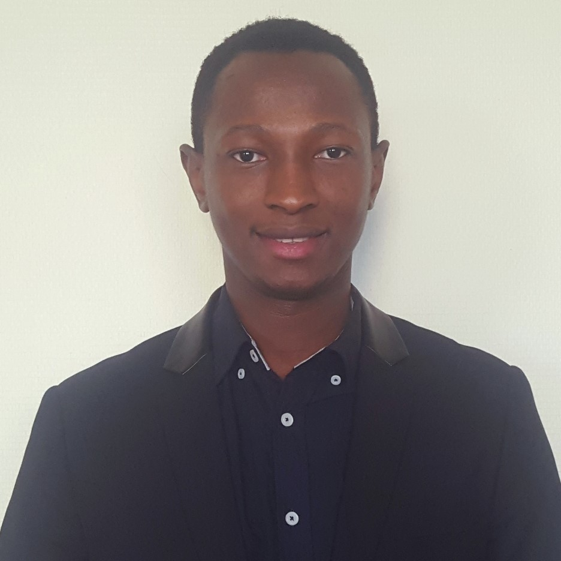

Cheick YATTARA
Age : 29 ans
Ingénieur process et Méthodes Systèmes d'informations
Permis de conduire B
Mobilité France et Internationale
Coordonnées
9 place Camille Georges,69002 lyon
Email : cheick.yattara@outlook.fr
Téléphone : 0033 6 76 18 29 52
Langages de programmation
Langage C
Langage Java
Langage SQL
Langage Shell
Logiciels
Aspen
Access
Matlab
Excel
AutoCAD
Langues
Anglais : Intermediaire
Francais : Bilingue
Outils de gestion
ACCESS
PowerBI
COMPETENCES
En informatique
Langages de programmation (Shell, C, Java)
Systèmes d'exploitation (Unix (MacOS X, GNU/Linux Debian, Ubuntu))
Business Intelligence (Power BI ,Excel)
ERP (SAP)
Systèmes d'information (Merise, UML)
Base de données (Oracle/SQL)
En Process
Modélisation et simulation des procédés : MATLAB
Ingénierie des procédés : PFD/PID sous ASPEN
Gestion des risques : Risques chimiques et espace confiné, Risques biologiques, Incendie et explosion
Dimensionnement hydrauliques
FORMATIONS
| 2019-2020 |
Master 2, Compétences complémentaires en informatique
Université Claude Bernard Lyon 1 Villeurbanne | France |
| 2018-2019 |
DU Université-Entréprise
Université Grenoble Alpes| France |
| 2017 - 2018 |
Master 2, Génie des procédés et des bioprocédés : Génie des procédés physicochimiques
Université Claude Bernard Lyon 1 Villeurbanne | France |
Lien video Presentation de mon Parcours universitaire ici MonParcoursGEP
|
| 2015 - 2016 |
Licence Génie des procédés physicochimiques
Université Claude Bernard Lyon 1 Villeurbanne | France |
EXPERIENCES PROFESSIONNELLES
| 04/2019-07/2019 |
Ingenieur Assistant projet Etude-Base de donnees (3 mois)
Chargé de projet pour la structuration de la demarche qualité de l'entreprise;
AQUAREM ,France
Poste :Ingenieur Etude-Developpement
|
| 03/2018-07/2018 |
Ingenieur Assistant Etude et Developement d'ouvrages hydrauliques(5 mois)
Etude hydraulique et calcul de dimensionnement des ouvrages
Hydrass,France
Poste : Stagiaire ingénieur process
|
| 05/2016-07/2016 |
Stage – LAGEPP « Laboratoire d'Automatique et de Genie des procédés et pharmaceutiques » (3 mois)
Projet: etude des modes de sechage de la spiruline
Poste : Ingenieur Assistant Recherche et Developpement;
|